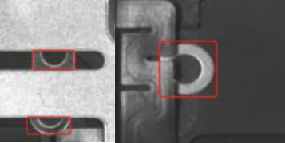

Dự án này chủ yếu kiểm tra Shim tròn tại vị trí cố định bên trái và phải của sản phẩm, Shim vuông tại bốn góc cố định, kiểm tra nhiều miếng Shim trong vùng và kiểm tra dây xếp hàng.
Dự án sử dụng ánh sáng trái-phải, ánh sáng trước-sau và ánh sáng bốn phía để chụp ảnh ba lần. Sau khi tiền xử lý hình ảnh, mô hình phân loại được dùng để phát hiện Shim tròn và Shim vuông tại vị trí cố định và các khu vực bị che khuất; mô hình kết hợp phát hiện + phân loại được dùng để kiểm tra nhiều miếng Shim; phương pháp kiểm tra 2D truyền thống dùng để kiểm tra dây xếp hàng. Các nội dung kiểm tra cụ thể như sau:
Mô hình phân loại lần lượt kiểm tra Shim tròn và Shim vuông tại vị trí cố định trên hình ảnh ánh sáng trái-phải, sau đó dùng khu vực kết quả để kiểm tra lại trên hình ảnh ánh sáng trước-sau; mô hình cũng thực hiện kiểm tra trên hình ảnh bốn phía. Cụ thể như sau:
(1) Trong hình dưới, vị trí khung màu xanh là khu vực kiểm tra lần đầu Shim tròn tại vị trí cố định bên trái và phải trên hình ảnh ánh sáng trái-phải. Mô hình phân loại đánh giá khu vực chọn là OK/NG và xuất vị trí kết quả NG.
(2) Trong hình dưới, vị trí khung màu xanh lá là khu vực NG lần đầu, tiến hành kiểm tra phân loại Shim tròn trên hình ảnh ánh sáng trước-sau và xuất vị trí NG cuối cùng.

(3) Trong hình dưới, vị trí khung màu xanh là khu vực kiểm tra lần đầu Shim vuông tại vị trí cố định bên trái và phải trên hình ảnh ánh sáng trái-phải. Mô hình phân loại đánh giá khu vực chọn là OK/NG và xuất vị trí NG.

(4) Trong hình dưới, vị trí khung màu xanh lá là khu vực NG lần đầu, kiểm tra lại Shim vuông trên hình ảnh ánh sáng trước-sau, cuối cùng xuất vị trí NG.

(5) Trong hình dưới, vị trí khung màu xanh lá là khu vực kiểm tra che khuất trên hình ảnh ánh sáng bốn phía. Nếu có vật khác che khuất vùng sản phẩm, đánh giá là NG.

Mô hình phát hiện thực hiện hai lần kiểm tra Shim nhiều miếng trên hình ảnh ánh sáng bốn phía và hình ảnh ánh sáng trái-phải theo song song, cụ thể như sau:
(1) Trong hình dưới, vị trí khung màu xanh lá là khu vực kiểm tra Shim nhiều miếng trên hình ảnh ánh sáng bốn phía. Nếu có nhiều miếng Shim trong khu vực, sẽ tạo ra một khung chữ nhật bao ngoài.

(2) Trong hình dưới, vị trí khung màu xanh lá là khu vực kiểm tra Shim nhiều miếng trên hình ảnh ánh sáng trái-phải. Nếu có nhiều miếng Shim, tạo một khung chữ nhật bao ngoài.

(3) Trong hình dưới, vị trí khung màu đỏ là khung chữ nhật bao ngoài phần Shim hiển lộ do mô hình phát hiện tạo ra.

Kiểm tra dây xếp hàng thực hiện bằng phương pháp tìm đường 2D truyền thống và đo khoảng cách giữa các đường để đánh giá kết quả kiểm tra, không trình bày chi tiết trong bài viết, như hình dưới:

Hình ảnh thu thập ba lần ánh sáng, sau khi định vị và xác nhận, đưa trực tiếp vào mô hình phân loại; mô hình phát hiện Shim nhiều miếng cần xử lý ROI trên hình ảnh gốc, kết quả kiểm tra được tính toán và xuất đồng bộ. Quy trình như sau:

Như hình dưới, kiểm tra Shim tròn và Shim vuông bằng mô hình phân loại theo dạng nhánh lồng nhau: lớp đầu là mô hình phân loại trên hình ảnh ánh sáng trái-phải, lồng bên trong là mô hình phân loại trên hình ảnh ánh sáng trước-sau.

Hình ảnh bên trái là kết quả NG của lần kiểm tra đầu tiên Shim tròn tại vị trí cố định, sau đó đưa sang hình bên phải để kiểm tra lần hai, loại bỏ khu vực bị sai và xuất kết quả cuối cùng.

Hình bên trái là kết quả NG lần đầu kiểm tra Shim vuông tại vị trí cố định, sau đó đưa sang hình bên phải để kiểm tra lần hai, loại bỏ khu vực sai và xuất kết quả cuối cùng.

Như hình dưới, kiểm tra che khuất bằng mô hình phân loại cần lấy trước ROI, loại bỏ nhiễu nền và đưa vào công cụ Deep Learning để phân loại.

Sau khi kiểm tra sản phẩm không bị che khuất, mô hình phân loại trực tiếp xuất kết quả OK/NG.

Như hình dưới, sử dụng nhánh lồng song song để xử lý đồng thời hình ảnh ánh sáng bốn phía và hình ảnh ánh sáng trái-phải; các nhánh lồng bên trong sử dụng mô hình phát hiện xử lý đồng thời: nhánh mô hình 1 dùng mô hình (Hình 1), nhánh mô hình 2 dùng mô hình (Hình 2).

Hình bên trái, vị trí khung màu xanh lá là mô hình Deep Learning kiểm tra nhiều miếng Shim trên hình ảnh ánh sáng bốn phía (mô hình 1); hình bên phải, vị trí khung màu xanh lá là mô hình kiểm tra nhiều miếng Shim trên hình ảnh ánh sáng trái-phải (mô hình 1).

Hình bên trái, vị trí khung màu đỏ là mô hình Deep Learning kiểm tra nhiều miếng Shim trên hình ảnh ánh sáng bốn phía (mô hình 2); hình bên phải, vị trí khung màu đỏ là mô hình kiểm tra nhiều miếng Shim trên hình ảnh ánh sáng trái-phải (mô hình 2).

Mô hình Deep Learning kiểm tra nhiều miếng Shim khi quét hình ảnh sẽ tạo khung chữ nhật màu đỏ bao quanh vị trí các miếng Shim nhiều miếng, như hình dưới:

Như hình dưới, phần khung màu xanh lá là script hiển thị kết quả kiểm tra nhiều miếng Shim và phân loại che khuất; phần khung màu đỏ là script hiển thị kết quả Shim tròn và Shim vuông tại vị trí cố định.

Giao diện sản xuất hiển thị kết quả như hình dưới: